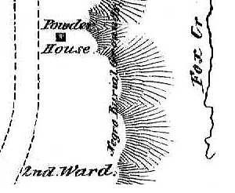

The only authentic (not TS) historical reference to this location encountered thus far in the community-based record and our ongoing sweep of Internet-based resources appears on an engraving of a city map attributed to State Surveyor General Simeon De Witt and dated 1790.
The same engraved map also shows the first municipal cemetery located a few hundred feet to the south. That cemetery was divided by churches and included some family plots - but none for the city's Afro Albanian minority that, at that time, numbered almost 600 individuals.
Although subsequent maps on our cartographic radar suggest that the plot was never "gridded-out" for development, the location was not marked as a burial place on any other historical cartography. Its location appears to have been on the edge of the ridge overlooking the Foxes Creek Ravine - a steep hillside then and now with the legendary Road Street running along the southern base of the hill.
The Washington Park cemetery opened during the early 1800s and did include a plot reserved for so-called "Colored" people. Those graves were among the stones removed to Albany Rural Cemetery and re-set in a separate part of Albany Rural as the African Methodist Episcopal Church plot. In 1866, a listing was made of the remains relocated from Washington Park.
posted 12/1/03; last revised 2/16/15